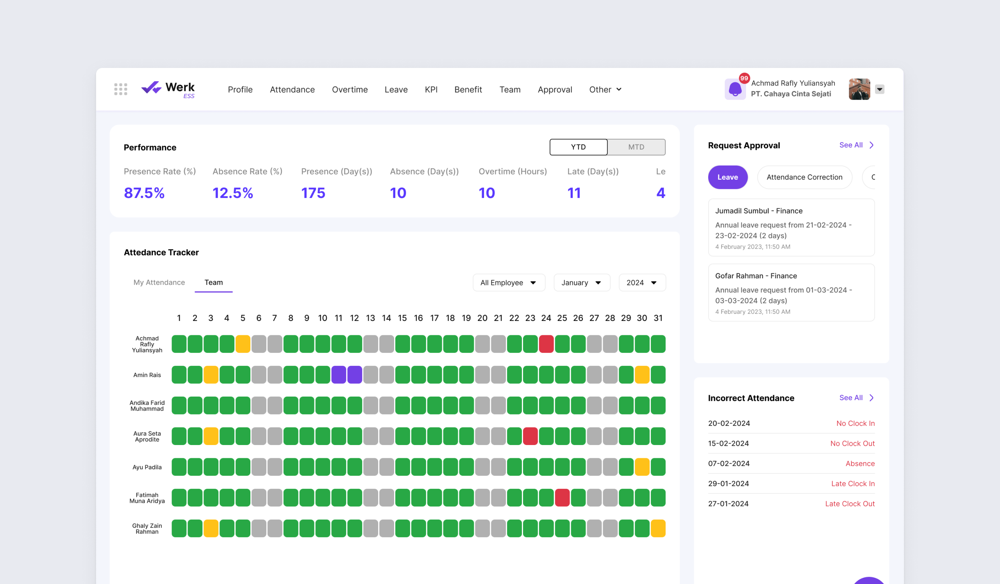
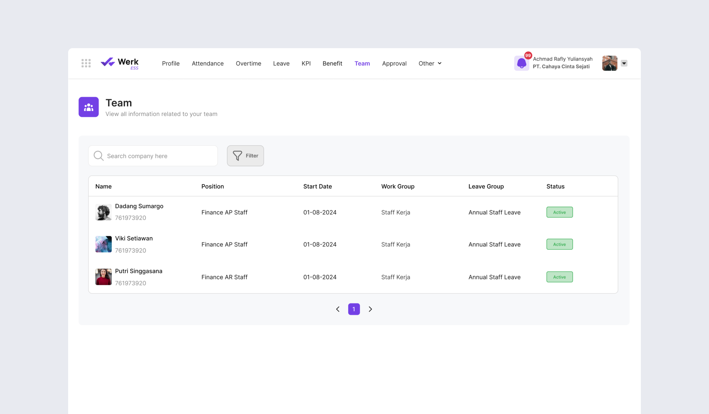
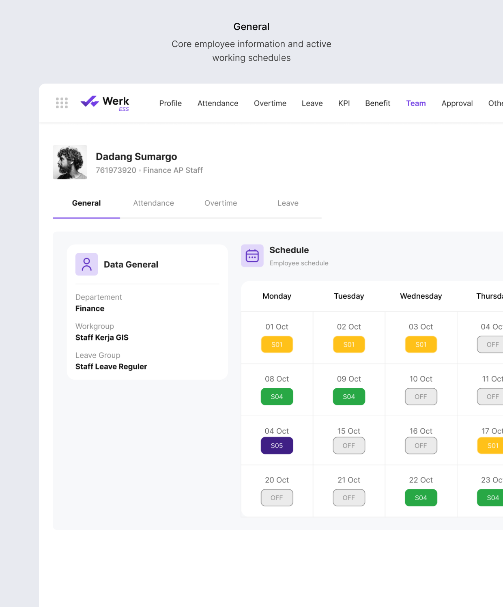
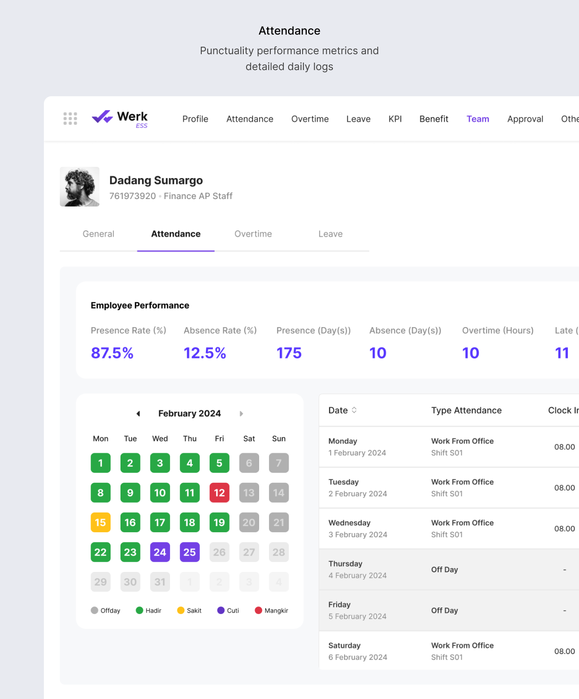
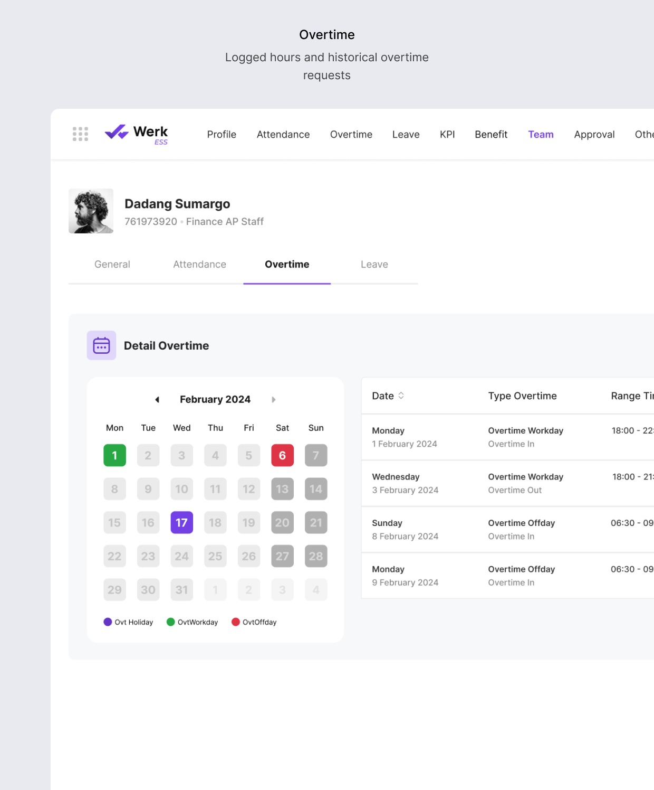
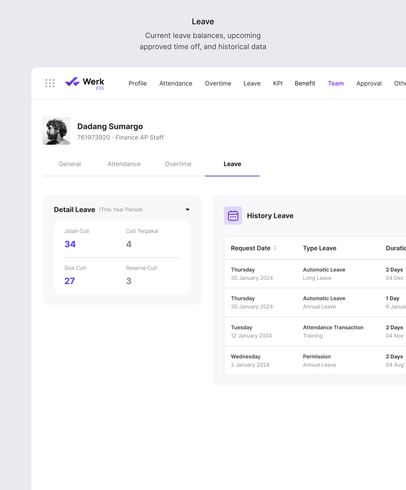
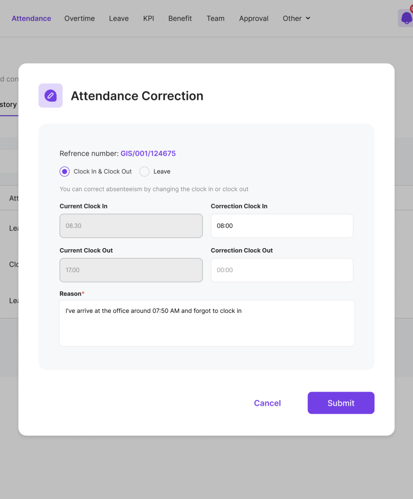
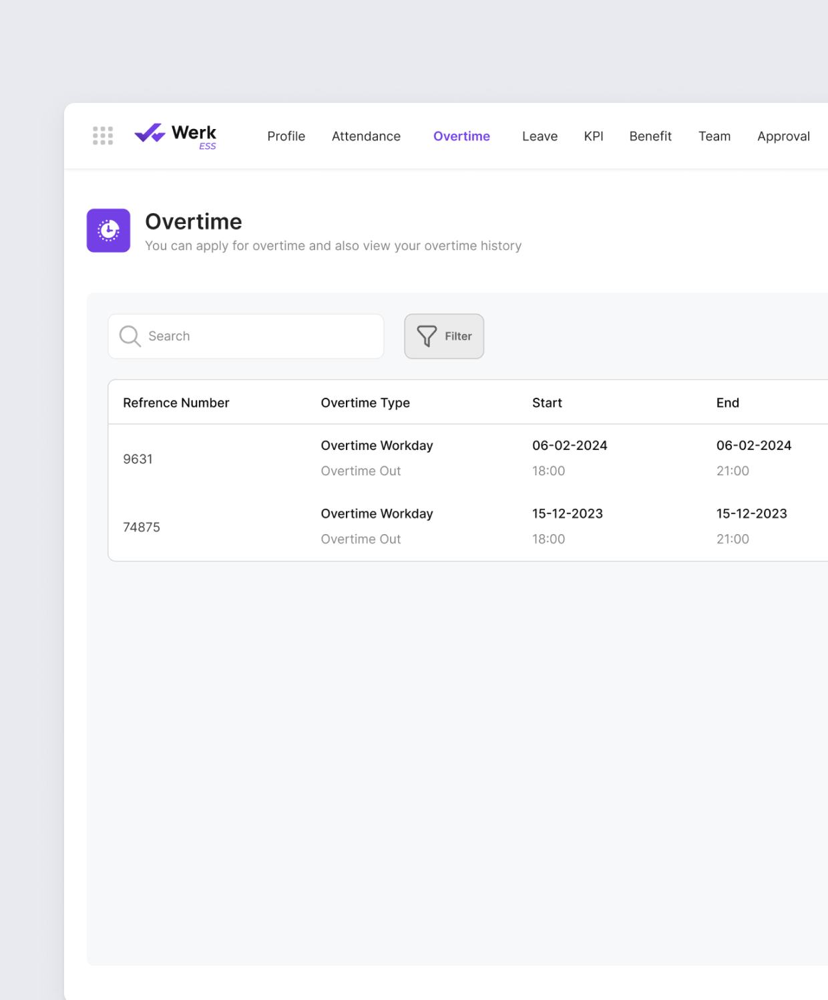
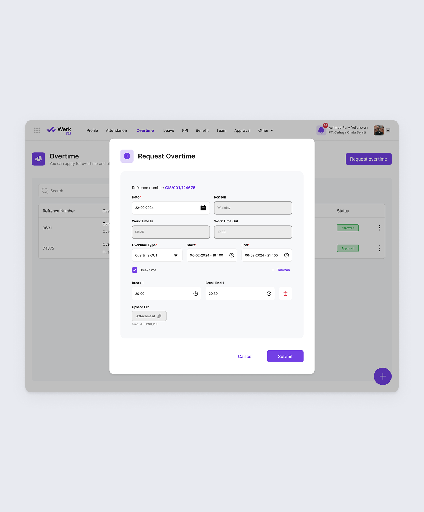
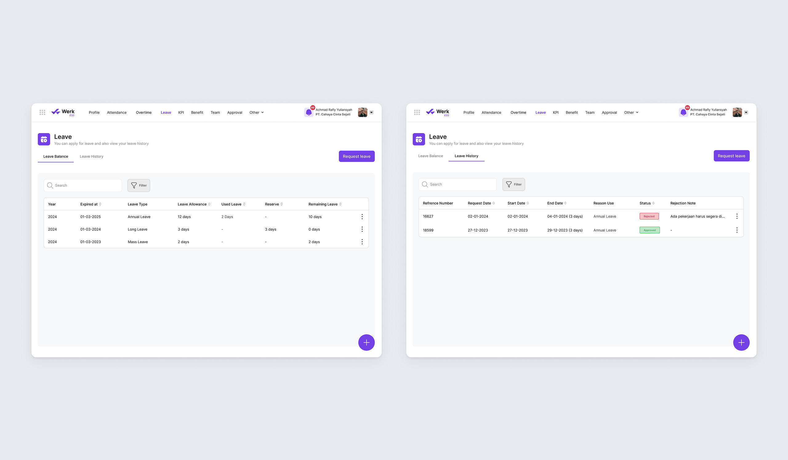

Werk: Employee Self Service (ESS)
Most ESS tools on the market offer just enough to check a box: limited features wrapped in a complicated interface. Employees end up struggling to handle basic requests, which slows everyone down and quietly dumps the extra workload back onto HR.
I designed an ESS module that centralizes attendance, leave, overtime, and KPI tracking into one place, with simpler approvals and more transparency than what’s typically on offer, without the bloated interface that usually comes with “comprehensive” features.
Real-Time Team Visibility & Self-Service
Managers previously lacked real-time visibility into their team’s daily availability, relying on HR or convoluted reports just to track absences, which slowed down operational planning. I designed a self-serve managerial hub that surfaces real-time team availability directly on the dashboard, backed by a dedicated directory for deeper personnel management.
Dual-Purpose Attendance Tracker (Dashboard)
I built an adaptive dashboard widget: standard employees see only their own attendance, but managers unlock an expanded view showing their subordinates’ daily status (present, on leave, sick, absent) in real time the moment they log in.

Dedicated Team Directory
I created a “Team Page” visible only to users with subordinates, structured to surface operational context at a glance: job titles, start dates, work/leave groups, and current status.

Segmented Employee Profiles
To avoid overloading managers with information, clicking into a subordinate opens a tabbed layout that breaks their detailed records into four distinct operational areas.




Streamlining Administrative Request Workflows
The old process ran on manual, paper-based forms: leave requests, overtime logs, and attendance corrections all needed physical signatures, and employees had zero visibility into their request status or remaining balance without asking HR directly. I digitized the entire workflow into a centralized self-service portal, giving employees direct transparency into their own data and a frictionless way to submit and track requests.
Attendance & Correction Hub
I built a space for employees to monitor their daily attendance logs, with a correction workflow for discrepancies like a missed clock-in, letting users track the exact status (Approved, Rejected, Pending) of their revision. Since Werk is modular, clients can toggle this feature off if it doesn’t fit their policy.

Overtime Processing
I designed a simple interface for viewing historical overtime logs and submitting new requests dynamically, replacing manual timesheets.


Leave Management & Balances
To reduce dependency on HR, I placed remaining leave balance at the top of the page, letting employees instantly check eligibility before entering the streamlined request flow.

Outcome
The result is a self-service system that shifts routine HR work back to where it belongs: with the employee. Attendance corrections, leave requests, and overtime logs no longer require a trip to HR or a paper trail to track. For managers, real-time team visibility means operational decisions, like approving leave or reallocating shifts, no longer wait on a report that’s already out of date the moment it’s generated.